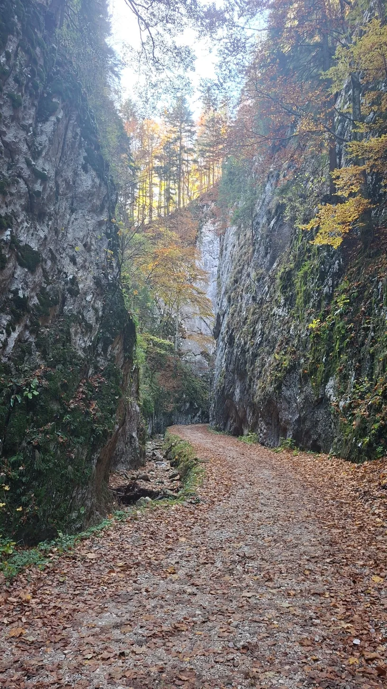

Bran & Moieciu
Pair a visit to Bran Castle with the village roads around Moieciu de Sus and the views at Amfiteatrul Transilvania.
Pair a visit to Bran Castle with the village roads around Moieciu de Sus and the views at Amfiteatrul Transilvania.

Walk through Prăpăstiile Zărneștiului or spend the afternoon in Măgura and Peștera.

Start in Brașov and ask about adding Râșnov, the Libearty Bear Sanctuary or a separate trip to Peleș in Sinaia.

Planning to travel farther west? I can help you piece together a route through the villages of the Apuseni Mountains.